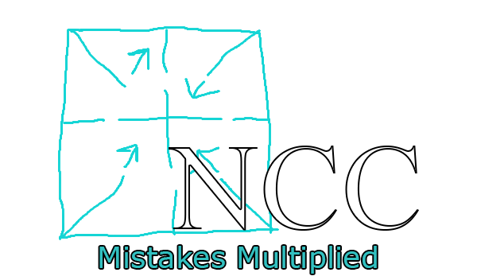

NullCore (Enhanced Free Edition)

mirrors:
yougame.biz / github.com
plutosolutions telegram
[ info ]
$60 TF2 cheat that was made by some ukrainian. The crack itself was made in like 2 hours.
[ how-to ]
Normal method (should work for most people)
- Download nullcore.dll from here
- Start the game and inject as soon as possible using any DLL injector you have (don't use Extreme Injector, Process Hacker or Xenos, they are VAC detected)
Alternative method
- Download nccalternative.zip from here
- Inject nccsteam.dll into steam.exe and start the game (reinject nccsteam.dll only if you restart steam)
- While on the main menu, inject nccgame.dll into hl2.exe (the game)
[ credits ]
- V952 - making this cheat
- mrnv/ayywareseller - dumping and cracking
- pavukk - providing an account